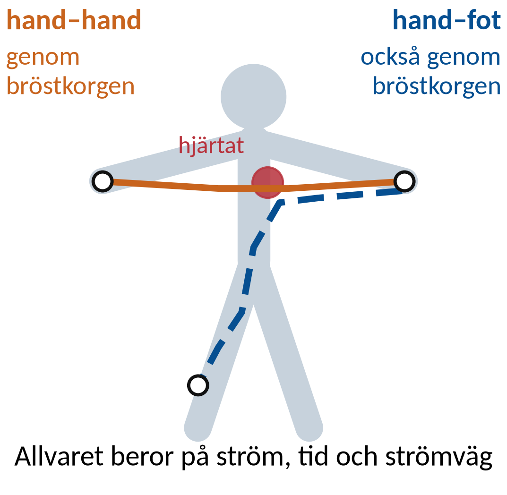
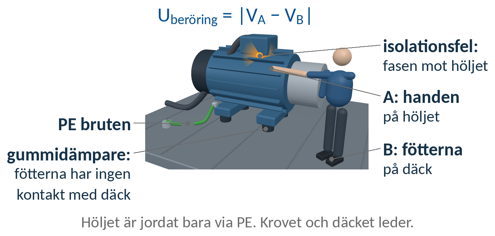
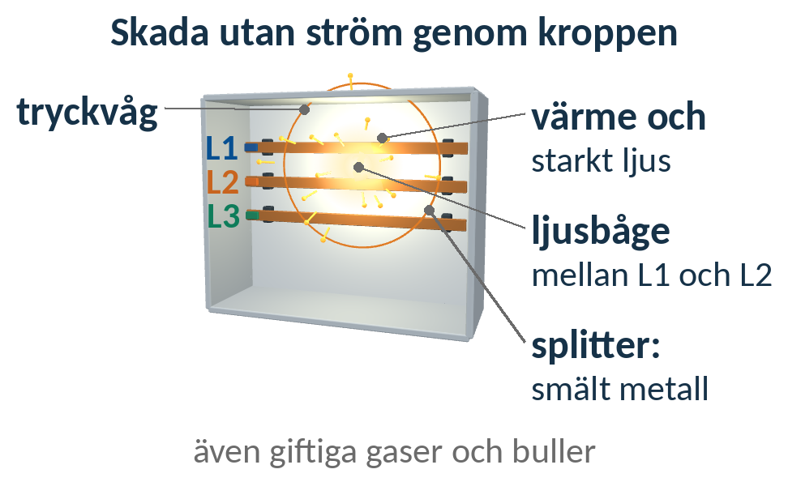
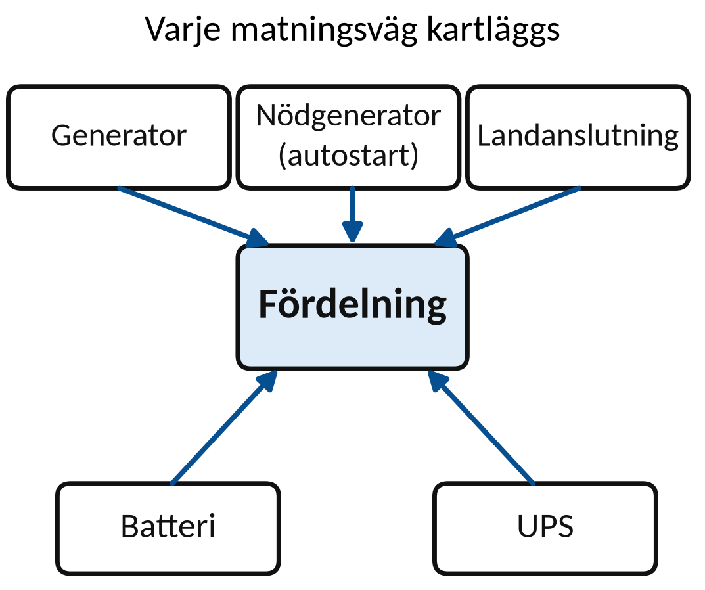
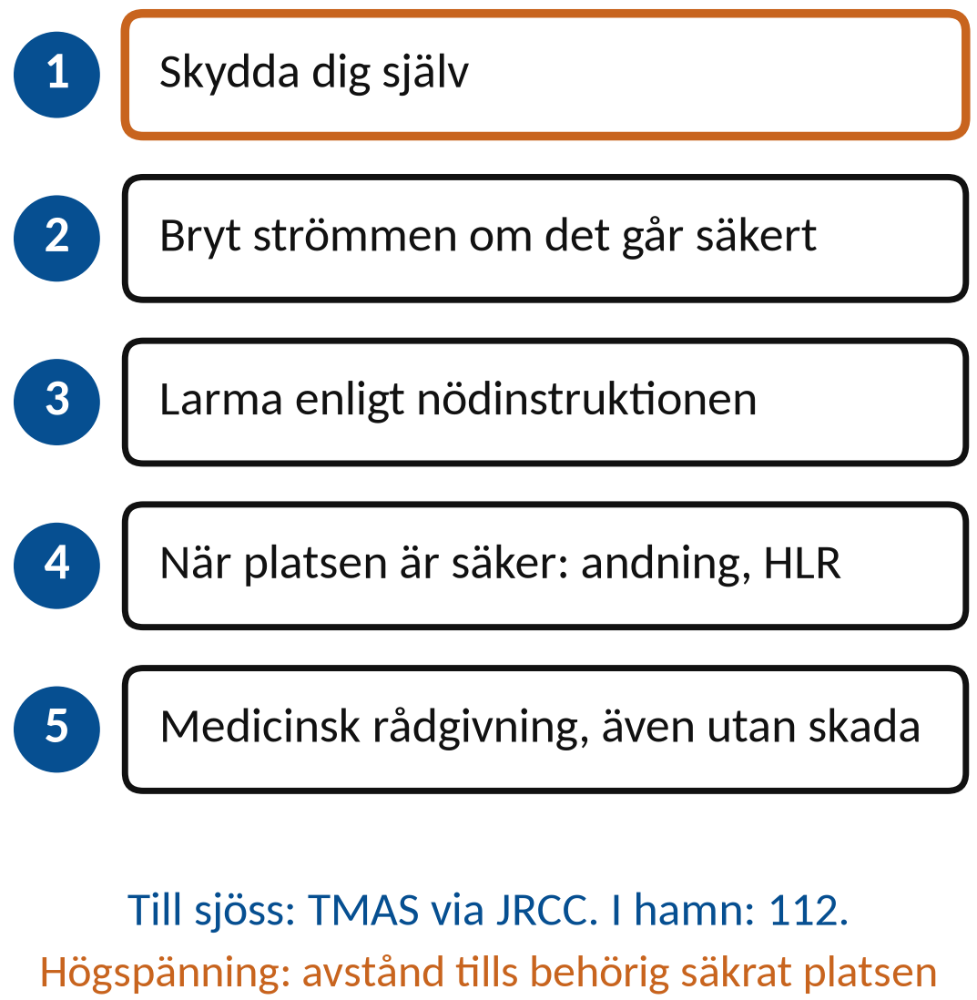
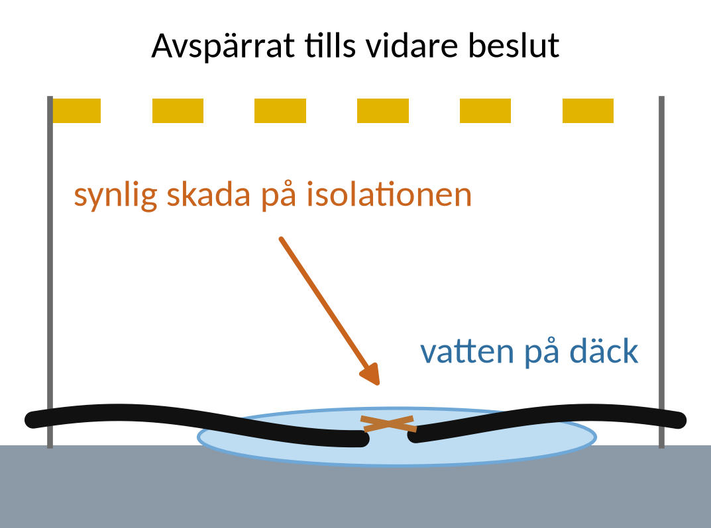

Vecka 42 · Del 1 av 3
Del 1: Elektriska risker
1 Översikt
Det här ska du kunna
- Identifiera riskkällor i ett arbetsfall.
- Skilja strömgenomgång, ljusbåge och följdolyckor.
Fundera först: Kan ett system vara farligt även om ingen person får ström genom kroppen? Svaret finns i teorin nedan.
Så gör du
- Läs teorin ett avsnitt i taget (7 korta avsnitt). Sist i varje avsnitt står vilka övningar du kan göra direkt.
- Följ exemplen med papper och räknare, steg för steg. Gissa nästa steg innan du läser det.
- Gör övningarna 1.1–1.10. Fastnar du: Ledtråd 1 visar vilket samband du behöver och var i teorin det förklaras. Ledtråd 2 visar hur du börjar och Ledtråd 3 exemplet som räknar samma sorts uppgift med andra tal. Öppna facit när du har ett eget svar.
- Lämna in veckans uppgifter: Veckans inlämning.
Så skriver du en lösning som går att följa
1. Givet och sökt
Skriv av värden, enheter och vad du ska bestämma.
2. Samband och villkor
Välj formel eller princip. Kontrollera koppling, driftfall och antaganden.
3. Uträkning och kontroll
Omvandla enheter, sätt in värden och tolka resultatet.
I resonemangsfall: koppla observation till en motiverad slutsats.
Lärarens presentation · PDF · Räknarhjälp · Formelblad
Förkortningar och beteckningar i den här delen (3)
- R
- resistans. Resistorns motstånd mot ström. Beror inte på frekvensen. Enhet: Ω (ohm).
- VA, kVA
- voltampere. Enheten för skenbar effekt S. 1 kVA = 1 000 VA.
- var, kvar
- voltampere reaktiv. Enheten för reaktiv effekt Q. 1 kvar = 1 000 var. Skrivs med små bokstäver.
2 Teori
Ett avsnitt i taget: öppna det, läs, och gör sedan övningarna som står sist i avsnittet. Formeln bredvid rubriken är det viktigaste i avsnittet.
1Fara, händelse och skada
Fara är en egenskap eller situation som kan orsaka skada.
Exponering beskriver hur en person kan utsättas för faran.
Konsekvens är den skada som kan följa.
Riskbedömningen kopplar arbetsmomentet till både möjlig händelse och följd.
Öva nu: Övning 1.1, Övning 1.3, Övning 1.4, Övning 1.7, Övning 1.9
2Strömmens väg genom kroppenSpänning ensam bestämmer inte skadan
Skadans allvar påverkas av ström, varaktighet och strömväg.
Fukt, kontaktyta och hudens tillstånd påverkar kontakten.

Spänning ensam bestämmer inte skadan
En väg genom bröstkorgen kan påverka hjärtat.
Ett generellt kroppsmotstånd kan inte ge en säker gräns.
3BeröringsspänningI = U/R är en förenklad beräkningsmodell
Beröringsspänning är en potentialskillnad mellan punkter som en person kan beröra samtidigt.

I = U/R är en förenklad beräkningsmodell
Utsatt metall kan bli spänningsförande vid isolationsfel.
Kroppens elektriska egenskaper varierar med situationen.
4Ljusbågens konsekvenserTillgänglig felenergi och tid påverkar följden
En ljusbåge kan ge värme, tryck, starkt ljus och splitter.
Skador kan uppstå utan strömgenomgång genom kroppen.

Tillgänglig felenergi och tid påverkar följden
Ett verktyg eller en felaktig mätanslutning kan initiera fel.
Riskbedömningen behöver omfatta hela arbetsmomentet.
Öva nu: Övning 1.2, Övning 1.8
5Risker i marin miljöVarje möjlig matningsväg behöver identifieras
Fukt, trånga utrymmen och ledande omgivning påverkar arbetet.
Reservmatning och batterier kan ge flera energikällor.

Varje möjlig matningsväg behöver identifieras
Ett stoppat aggregat eller släckt manöverpanel visar inte att arbetsområdet är säkert att beröra.
Öva nu: Övning 1.5, Övning 1.6
6En inträffad elolyckaTill sjöss: radiomedicinsk rådgivning (TMAS)
Skydda dig själv och bryt energitillförseln om det kan ske säkert.
Larma enligt fartygets nödinstruktion. I hamn: 112.

Till sjöss: radiomedicinsk rådgivning (TMAS)
När platsen är säker: bedöm andning och ge HLR vid behov.
Vid högspänning håll avstånd tills behörig person säkrat platsen.
7Tillbud och lärandeObservation, bakomliggande orsak, åtgärd
Ett tillbud har kunnat leda till skada även om ingen skadades.
Dokumentera händelseförlopp och brister i skydden.
Observation, bakomliggande orsak, åtgärd
”Proben var skadad” beskriver observationen.
”Ingen förkontroll ingick” kan förklara varför risken kvarstod.
Öva nu: Övning 1.10
3 Exempel
Följ exemplet steg för steg med papper och räknare. Försök själv med nästa steg innan du läser det. Övningarna använder samma metod med andra tal.
E1En riskförklaring
En skadad skarvkabel ligger där vatten samlas. Ingen berör den just nu.

Fara, möjlig exponering och konsekvens
- Observation: synlig kabelskada och vatten i området.
- Möjlig händelse: en person berör en del vars isolation brustit.
- Möjlig följd: strömgenomgång eller fallskada.
Spänningssättning är ännu inte verifierad. Den synliga skadan räcker för att stoppa användningen.
E2Tillbud och förbättring
En skadad prob upptäcks före användning. Mätningen har ännu inte påbörjats.
Direkt åtgärd och förebyggande kontroll
- Ta den skadade proben ur bruk och märk enligt rutinen.
- Ordna avsedd, kontrollerad utrustning innan mätningen.
- Följ upp hur skadan uppstod och hur förkontrollen fungerar.
Rapporten skiljer vad som observerats från antagen orsak. Åtgärden ska kunna följas upp.
4 Övningar
Räkna på papper. Bocka av en övning när du har kontrollerat ditt svar mot facit. Avbockningen sparas i den här webbläsaren.
Övning 1.1: Fuktig miljö
En person ska undersöka en skadad arbetslampa på ett vått metalldäck. Ange två faktorer som ökar risken.
Givet: En skadad arbetslampa på ett vått metalldäck. Spänning och skydd är inte kontrollerade.
Ledtråd 1: vilken princip?
Utgå från Fara + exponering kan leda till skada. Läs Teori 1: Fara, händelse och skada.
Ledtråd 2: hur börjar jag?
Fukt och kontakt med ledande ytor gör det lättare för ström att gå genom kroppen. Välj två omständigheter i fallet och förklara hur var och en ökar risken.
Ledtråd 3: steg för steg
1) Läs fallet och stryk under allt som har med vatten, metall, skador och okontrollerat skydd att göra. 2) Välj två. 3) För varje: skriv hur den gör det lättare för ström att gå genom kroppen, eller att isolationen inte skyddar. Annat fall: en borrmaskin med sprucken kåpa i ett fuktigt pumprum. Vilka omständigheter ökar risken där?
Facit
Ett bra svar tar upp två av: vatten minskar övergångsresistansen, metalldäcket ger en ledande väg till kroppen, lampan är skadad så isolationen kan vara bruten, och skyddsfunktionen är inte verifierad.
Övning 1.2: Två sorters skada
Beskriv skillnaden mellan strömgenomgång och ljusbågsskada.
Givet: En ljusbåge kan skada även om ingen ström går genom personen.
Ledtråd 1: vilken princip?
Utgå från Strömgenomgång respektive ljusbåge. Läs Teori 4: Ljusbågens konsekvenser.
Ledtråd 2: hur börjar jag?
Vid strömgenomgång går strömmen genom kroppen. En ljusbåge ger värme, tryck och splitter. Beskriv hur var och en skadar och ange den viktigaste skillnaden.
Ledtråd 3: steg för steg
1) Beskriv strömgenomgång: var går strömmen och vad i kroppen påverkas? 2) Beskriv ljusbåge: vad frigörs (värme, tryck, ljus, metall) och hur träffar det personen? 3) Skriv skillnaden i en mening: måste personen ingå i strömvägen eller inte?
Facit
Strömgenomgång: strömmen går genom kroppen och kan påverka hjärta, muskler och vävnad. Ljusbåge: värme, tryck, ljus och smält metall skadar utifrån, även om personen inte ingår i strömvägen.
Övning 1.3: Beröringspunkter
Ett metallhölje ligger 60 V högre än en ledande konstruktion alldeles bredvid. En person kan röra vid båda samtidigt. Vilken spänning är det som gäller för beröringen?
Givet: Det är 60 V mellan höljet och konstruktionen. Båda kan röras samtidigt.
Ledtråd 1: vilket samband?
Använd Uberöring = |VA − VB|. Läs Teori 1: Fara, händelse och skada.
Ledtråd 2: hur börjar jag?
VA och VB är spänningen i de två punkter som kan röras samtidigt. Det är skillnaden mellan dem som gäller, inte spänningen mot en godtycklig jordpunkt.
Ledtråd 3: steg för steg med andra tal
1) Leta upp de två ledande delar som personen kan röra samtidigt. 2) Beröringsspänningen är skillnaden i potential mellan just de två delarna, oavsett hur hög var och en är mot jord. Exempel ombord: en motorram ligger 45 V över skrovet och ett räcke har skrovets potential. Den som rör båda får en beröringsspänning på 45 V.
Facit
60 V, potentialskillnaden mellan de två punkter personen kan beröra samtidigt.
Svar: beröringsspänning ≈ 60 V
Övning 1.4: Räkneexempel med begränsning
I en förenklad räknemodell är U = 24 V och R = 2 000 Ω. Beräkna strömmen. Varför kan svaret inte användas som en allmän säkerhetsgräns?
Givet: Förenklad räknemodell med U = 24 V och R = 2 000 Ω. Värdet på R är antaget.
Ledtråd 1: vilket samband?
Använd I = U/R; I[mA] = 1 000 · I[A]. Läs Teori 1: Fara, händelse och skada.
Ledtråd 2: hur börjar jag?
R är den antagna resistansen i Ω. Kroppens verkliga resistans varierar mycket. Räkna ut strömmen och förklara varför ett antaget R inte kan avgöra vad som är säkert.
Ledtråd 3: steg för steg med andra tal
1) Använd Ohms lag: I = U/R med U i volt och R i ohm. 2) Svaret blir i ampere. Gör om till mA genom att multiplicera med 1 000. 3) Fråga dig sedan hur säkert värdet på R är. Exempel: 50 V och 2 500 Ω ger I = 0,020 A = 20 mA. Kroppens resistans ändras med fukt, kontaktyta och spänning, så ett antaget R är bara ett räkneexempel.
Facit
I = 24/2 000 = 0,012 A = 12 mA. Kroppens resistans varierar kraftigt med fukt, kontaktyta och spänning. Därför ger ett antaget R ingen säker gräns.
Svar: I ≈ 12 mA
Övning 1.5: Släckt panel
Manöverpanelen är släckt efter STOPP. Varför bevisar det inte att anläggningen är spänningslös?
Givet: Det enda du vet är att panelen är släckt efter STOPP. Ingen har kontrollerat spänningslösheten.
Ledtråd 1: vilken princip?
Utgå från Stoppfunktion och frånskiljning har olika uppgifter. Läs Teori 5: Risker i marin miljö.
Ledtråd 2: hur börjar jag?
STOPP kan bryta styrningen medan kraftmatning, reservmatning eller lagrad energi finns kvar. Ange vad den släckta panelen faktiskt visar och vilken kontroll som fortfarande saknas.
Ledtråd 3: steg för steg
1) Vad styr panelen: manöverkretsen eller kraftmatningen? 2) Vilka andra källor kan finnas kvar: huvudmatning, reserv, lagrad energi i kondensatorer? 3) Vilken kontroll visar spänningslöshet på riktigt? Annat fall: en släckt skärm på en omriktare betyder inte att mellanledet är urladdat.
Facit
STOPP bryter styrningen. Kraftmatning, reservmatning eller lagrad energi kan finnas kvar. Spänningslöshet måste kontrolleras med provare enligt arbetsplanen.
Övning 1.6: Batteriets risk
Ett 24 V-batteri har stor kortslutningsförmåga. Ange en viktig risk som inte avgörs av spänningstalet ensamt.
Givet: Ett 24 V-batteri som kan ge stor kortslutningsström. Felkretsens resistans är inte känd, så strömmen kan inte räknas ut.
Ledtråd 1: vilken princip?
Utgå från Ifel ≈ U/Rslinga i en enkel modell. Läs Teori 5: Risker i marin miljö.
Ledtråd 2: hur börjar jag?
Även vid låg spänning kan liten total resistans ge stor kortslutningsström och kraftig uppvärmning. Vad händer i slingan när Rslinga är liten? Hitta inte på ett amperetal.
Ledtråd 3: steg för steg
1) Skriv Ohms lag för kortslutningsslingan: I = U/R. 2) Vad händer med strömmen om R är mycket liten, även när U är låg? 3) Vad gör stor ström på kort tid: värme, gnistor, brand? 4) Ge ett exempel på hur det kan hända, till exempel med ett verktyg. Hitta inte på ett amperetal.
Facit
Mycket stor kortslutningsström kan ge kraftig värme, ljusbåge, brand eller brännskador, till exempel om ett verktyg eller en ring kortsluter polerna.
Övning 1.7: Räddning
En person har skadats vid en elinstallation. Platsen kan fortfarande vara spänningssatt. Vad måste du tänka på innan du rör vid personen?
Givet: Platsen kan vara spänningssatt. Larm enligt nödinstruktionen. Vid högspänning säkrar behörig person platsen.
Ledtråd 1: vilken princip?
Utgå från Hjälparen får inte utsättas för elektrisk fara. Läs Teori 1: Fara, händelse och skada.
Ledtråd 2: hur börjar jag?
Den skadade eller något föremål kan fortfarande ha kontakt med spänningssatta delar. Förklara varför din egen säkerhet kommer först och vad du gör innan du rör personen. Följ larm- och räddningsinstruktionerna.
Ledtråd 3: steg för steg
1) Vem blir nästa skadade om platsen fortfarande är spänningssatt? 2) Vad måste göras innan någon rör personen: bryta, säkra, larma? 3) Vilken instruktion och vilket nummer gäller ombord och i land? Skriv svaret i den ordning du skulle göra det.
Facit
Hjälparen får inte själv bli exponerad. Bryt strömmen eller se till att platsen är säkrad innan du rör personen. Larma enligt fartygets nödinstruktion, det vill säga bryggan. Till sjöss ges medicinsk rådgivning via radio (TMAS). I hamn eller på land: 112.
Övning 1.8: Efter strömgenomgång
En kollega säger att en strömgenomgång ”inte var så farlig” och vill fortsätta. Vilket råd ger du?
Givet: Kollegan har varit utsatt för strömgenomgång och vill fortsätta arbeta.
Ledtråd 1: vilken princip?
Utgå från Strömgenomgång kan ge skador som inte syns. Läs Teori 4: Ljusbågens konsekvenser.
Ledtråd 2: hur börjar jag?
Upplevd liten påverkan utesluter inte skada. Elsäkerhetsverket rekommenderar kontakt med sjukvården. Vad rekommenderar du, och varför? Beskriv även rapporteringen enligt rutinen ombord.
Ledtråd 3: steg för steg
1) Vad kan en strömgenomgång ge för skador som inte märks direkt? 2) Vad rekommenderar Elsäkerhetsverket efter en strömgenomgång? 3) Vad ska hända med arbetet och med rapporten enligt rutinen? Skriv rådet som du skulle säga det till kollegan.
Facit
Avbryt arbetet och gå till säker plats. Kontakta den som har sjukvårdsansvaret ombord, som tar kontakt med radiomedicinsk rådgivning (TMAS) till sjöss eller sjukvården i hamn. Skador kan visa sig senare. Rapportera händelsen enligt fartygets rutin.
Övning 1.9: Tillbud
En felansluten mätsladd orsakar en kortslutning, men ingen skadas. Varför ska händelsen ändå rapporteras?
Givet: En felansluten mätsladd orsakade en kortslutning. Ingen skadades den här gången.
Ledtråd 1: vilken princip?
Utgå från Tillbud är en händelse som kunde ha skadat. Läs Teori 1: Fara, händelse och skada.
Ledtråd 2: hur börjar jag?
Att ingen skadades säger inget om hur illa det kan gå nästa gång. Förklara hur rapporten leder till åtgärder som förebygger. Beskriv vad som hände, inte vad personen kan ha tänkt.
Ledtråd 3: steg för steg
1) Skilj på vad som hände och vad som kunde ha hänt. 2) Vad kan rapporten leda till: hitta orsaken, ändra rutin, informera andra? 3) Varför är det bättre att lära sig av ett tillbud än av en olycka? Annat fall: en halkolycka som ”nästan” hände på ett vått däck.
Facit
Ett tillbud visar en brist som nästa gång kan ge personskada. Rapporten gör det möjligt att hitta orsaken och förebygga upprepning.
Övning 1.10: Förebyggande åtgärder
En skadad sladd upptäcks före användning. Föreslå en åtgärd direkt och en som minskar risken att det händer igen.
Givet: Sladden har en synlig skada och har inte använts. Den är inte reparerad eller godkänd för användning.
Ledtråd 1: vilken princip?
Utgå från Direkt skydd och förebyggande åtgärd. Läs Teori 7: Tillbud och lärande.
Ledtråd 2: hur börjar jag?
Den direkta åtgärden hindrar att någon utsätts för risken nu. Den förebyggande minskar risken att det händer igen. Ange vad som görs med sladden nu och hur kontrollen före användning kan bli bättre.
Ledtråd 3: steg för steg
1) Direkt: vad görs med sladden nu så att ingen annan använder den? 2) Förebyggande: hur uppstod skadan, och vad i förvaring, hantering eller kontroll kan ändras? 3) Skriv en åtgärd för varje. Annat fall: en trasig stege. Vad gör du med den nu, och vad ändrar du så att det inte händer igen?
Facit
Direkt: ta sladden ur bruk och märk den. Förebyggande: se över förkontrollen, förvaringen och hur skadan uppstod.
Klart med delen?
Vilka uppgifter saknas oftast när någon bara säger ”det är 24 V”?
Påbörja v42-riskbedömningen. Beskriv arbetsmoment, miljö, energikällor och möjliga konsekvenser.
5 Labben
Labben kommer sist i veckan, när du har gått igenom del 1–3. Du använder samma metod som i övningarna: räkna först, läs av, jämför och förklara.
Veckans labbar Veckans inlämning
Källor och fortsatt läsning
Studieplanen YH03151, 18 september 2026 Sjöskolans kursmaterial och originalmall
Elsäkerhetsverket: elolyckor och risker
Elsäkerhetsverket: vid en elolycka
Transportstyrelsen: regler för el ombord